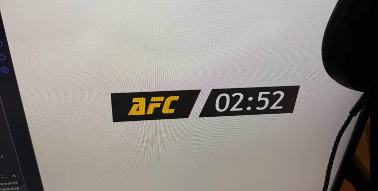
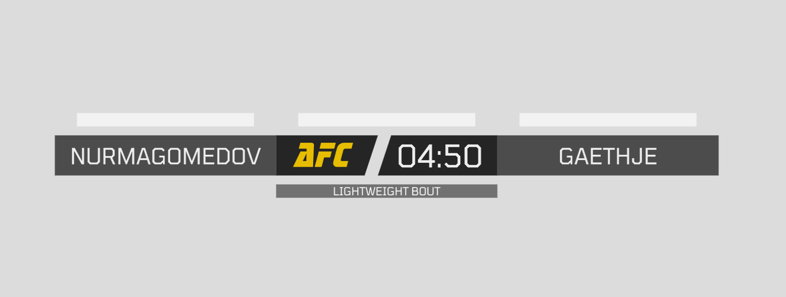
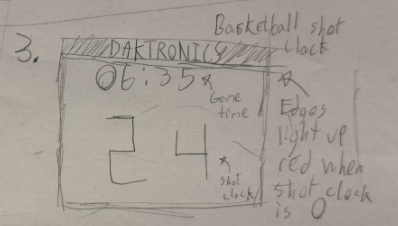
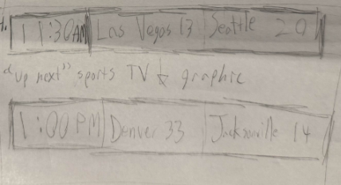
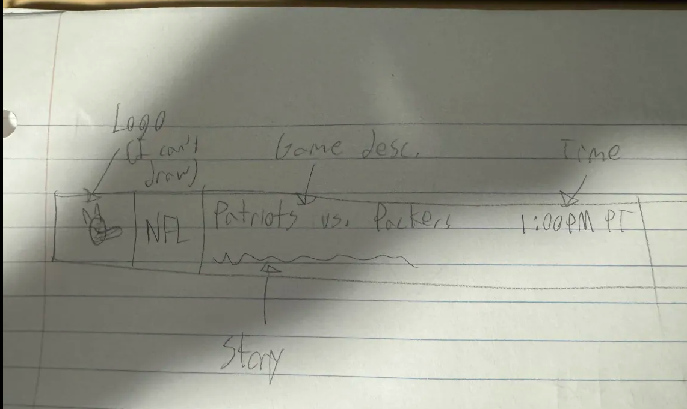

Sketch narrative (replace this and add to the other two sketches!)
Replace this entire block with your own text when submitting.
Context: This sketch is a time ticker graphic for TV broadcasters. It's specifically designed for combat sports broadcasts, and could be used for events like Boxing, MMA, kickboxing, etc.
- Context: This graphic is specifically for anyone broadcasting live sports, which may be official sports broadcasters, but could also be independent broadcasters of smaller promotions. I could imagine this design could be transferred into a widget or extension to be used not just on TV but on other streaming platforms like youtube or twitch.
- Design decisions: This visualization is meant to be displayed at a combat sports event, so while I wanted to stylize the ticker in a way that I felt looked visually appealing, I also didn't want it to be cluttering the screen. Thus, I took inspiration from the way the UFC does their broadcast ticker, and made various parts of it semi transparent. This included the empty progress bars, as well as the background graphics for the fight description and fighter names. I also decided to make the progress bars larger from my previous sketching, since I felt that smaller bars over the length of the center piece of the graphic would not have described how much time was truly left in a round proportional to the clock
- Future work: My biggest thing I would do with a future design would be to make it smaller compared to the reference image. I kept this design larger for the assignment purposes so you could get a better look at all the visualization was, but in practice when used in real life this should definitely be smaller. Also, the round text above the bars is a little hard to look at when contrasting with the light colored mat in the background, so I could probably add something in the background of the text to contrast better or just choose a different color entirely.
Sketch evolution
Replace these images with your own sketch evolution images.


Sketch narrative (replace this and add to the other two sketches!)
Replace this entire block with your own text when submitting.
Context: This is a basketball "shot clock", which displays both the time left in the game (at the top in yellow) as well as the time the team with the ball has to score a basket (text in red). One of these clocks in real life would be a physical item attached to the top of the backboard at a game to be seen by players and staff.
- Context: Basketball shot clocks are very important since they basically keep track of time for players and staff during an otherwise hectic game where you can't really look up at the scoreboard all the time. As for this particular visualization in p5.js, I could imagine you could release this as an alternative to an actual physical shot clock which can be expensive, and have something like this fullscreened to be used for smaller competitions (like with kids, for example)
- Design decisions: I decided that having text that counted down wasn't enough and that I wanted to add the full set of features to make this actually useful. First I changed the font to something more "digital", similar to how an actual shot clock would display. I also added a bit of a glowing effect to really make the colors pop and draw as much attention to the clock as possible. Finally, I added a little glowing effect to the board. It glows yellow when the shot clock hits 0, and red when the game ends.
- Future work: One feature that I felt like I could have added is a time out timer. Basically, adding a third clock under the board that only appears when the clock is paused, and only allows the clock to remain paused for however much time is displayed on the bottom clock. This would simulate basketball time outs, where a team gets an amount of time to rest or plan while the clock is paused.
Sketch evolution
Replace these images with your own sketch evolution images.

Sketch narrative (replace this and add to the other two sketches!)
Replace this entire block with your own text when submitting.
Context: This is a TV broadcast "bottom third" graphic that visualizes excerpts of sports games and stories as well as the time they are going to happen.
- Context: A graphic like this could be used by TV broadcasters, whether its a sports or news broadcaster. It could theoretically be used in a variety of contexts, namely pro sports or news broadcasts, I'd just need to tweak it slightly stylistically for use in news broadcasts.
- Design decisions: I decided to make this design a little simpler than the last two. I chose a color scheme that was not too flashy, as this is meant to be a non-invasive graphic that passively shows little pieces of information at the bottom of your screen while you watch sports, talk shows, or whatever else is shown on this channel. I also wanted this visualization to support any sport for general sports broadcasters, so I added a subsection that shows the league the current story is based on (nfl, nba, etc..) similar to how ESPN does it (but larger).
- Future work: One thing I'd like to add is a scrolling mechanic for the stories at the bottom. Perhaps you could make it to where while a story is shown, the text at the bottom either scrolls or fades in and out with the rest of the story to support longer pieces of information for a game. This current version only really supports stories that are less than the length of the bar.
Sketch evolution
Replace these images with your own sketch evolution images.


Adapted from Golan Levin, 2016-2018